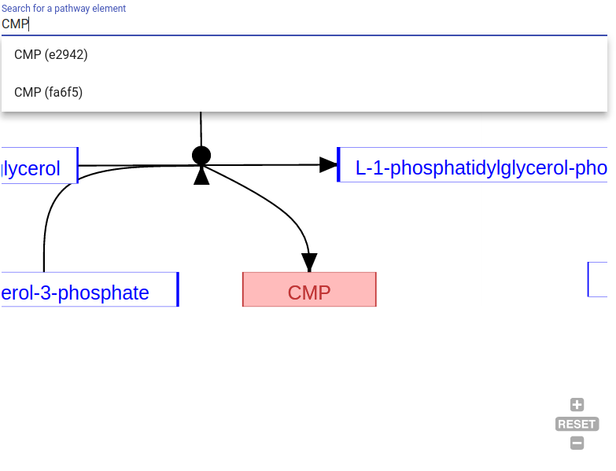

<div class="row">
  <article class="col-lg-8 offset-lg-2 col-xs-12">
    <section>
      <h1>Help</h1>
      <p>This page is designed to help you understand what MetabMaster is and how to use it.</p>
    </section>
    <md-tab-group [dynamicHeight]="true">
      <md-tab label="What is MetabMaster?">
        <section class="mt-3">
          <h1>What is MetabMaster?</h1>
          <p>MetabMaster is an app for viewing and creating "pathway stories". These stories help you understand the pathways
            intuitively through a "show, don't tell" principle.</p>

          <p>The stories compose of an interactive pathway diagram and an interactive description. The interactive
            description contains links that, when clicked, will update the diagram to outline the information you're
          currently reading about. Parts of the diagram can be zoomed in on, panned to, highlighted, or hidden.</p>

          <p>MetabMaster is built using <a href="http://wikipathways.org" target="_blank">WikiPathways</a> for the pathway
            diagrams. Every pathway diagram is retrieved from the WikiPathways database.</p>
        </section>
      </md-tab>
      <md-tab label="Viewing">
        <section class="mt-3">
          <h1>Viewing pathway stories</h1>
          <p>On the <a [routerLink]="['/']">home page</a> you'll find a list of the recently added pathway stories in
          reverse chronological order. Click the "view" button to head over to the pathway story. Once there, you should see
          a diagram on the right (at top if on mobile) and a description on the left. Click through the links to see the
          diagram update.</p>
          <p>Try out <a [routerLink]="['/pathway', '-Ki5j7s1tRJwwenBtcfb']">this demo of the TCA cycle</a>.</p>
        </section>
      </md-tab>
      <md-tab label="Creating">
        <section class="mt-3">
          <h1>Creating pathway stories</h1>
          <h2>Guiding principles</h2>
          <ul>
            <li><strong>Create a "story"</strong>. The description must explain the pathway in a time-related manner.</li>
            <li><strong>Make it interactive.</strong> Include interactive links to show, in the diagram, what you're
            talking about in your story at particular points.</li>
            <li><strong>"Show, don't tell"</strong>. Use the diagram and the description together to "show" the reader what
              happens in the pathway.</li>
          </ul>
          <h2>Steps</h2>
          <div class="steps">
            <h3>Step 1</h3>
            <p><strong>Sign up or sign in</strong> via <a [routerLink]="['/signin']">this page</a>.</p>
            <h3>Step 2</h3>
            <p>
              <strong>Find a pathway in <a href="http://wikipathways.org" target="_blank">WikiPathways</a> to write a story for.</strong>
              You can use the search tool to find a pathway or create a new one. The
              <a href="http://www.wikipathways.org/index.php/Help:New_Contributor_Quickstart" target="_blank">
                contributor quickstart</a> has some useful tips on how to get started in WikiPathways.
            </p>
            <h3>Step 3</h3>
            
            <p>
              Grab the pathway ID. This is the last part of the URL in the WikiPathways entry, excluding the WP part.
            </p>
            <h3>Step 4</h3>
            
            <p>
              <strong>Go to the <a [routerLink]="['/pathway', 'create']">create page</a>.</strong>
              <strong>Fill in the WikiPathways ID</strong>. You'll see the pathway diagram load up. Fill in the title and description too.
            </p>
            <h3>Step 5 (optional)</h3>
            <h4 class="text-muted">Make your description interactive!</h4>
            
            <p>
              Use the <i>"Search for pathway element"</i> to search for nodes by their name. This will give you the ID
              (in brackets) to use in the Markdown.
            </p>
            <div class="row">
              <div class="col">
                
              </div>
              <div class="col">
                
              </div>
            </div>
            <p>
              <strong>Use the special Markdown syntax</strong>. Learn how <a href="https://jacobwindsor.github.io/kaavio-showdown/writers" target="_blank">
              here</a>.
            </p>
            <p>
              <strong>Preview your story.</strong> Make sure your syntax was correct if the links are not shown correctly.
            </p>
            <p>
              <strong>Remember!: </strong> each link is <i>"self describing"</i>. This means the diagram will be reset
              <i>before</i> performing the operations you specify.
            </p>
            <h3>Step 6</h3>
            <p>Hit the save button and see your pathway story in action.</p>
          </div>
        </section>
      </md-tab>
      <md-tab label="Get in touch">
        <section class="mt-3">
          <h1>Get in touch!</h1>
          <p>Feel free to <a href="mailto:jacob.windsor@ymail.com">email me</a> (Jacob Windsor) if
            you would like some extra information about MetabMaster, have feedback, or just want to say hi!</p>
        </section>
      </md-tab>
    </md-tab-group>
  </article>
</div>
